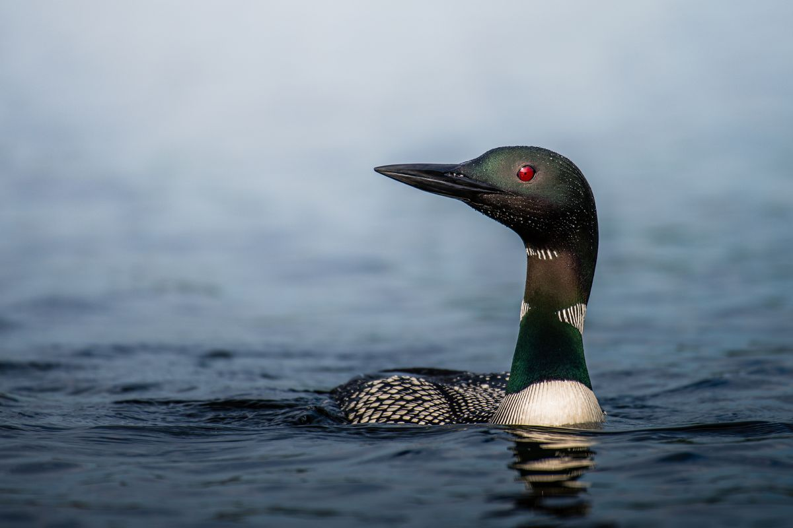

現代のwebサイトにおいて、画像の扱い方は少し難解です。ディバイスの種類は、モバイルからワイドスクリーンまで幅広く、高解像度の製品が次々と出ています。そして画像を鮮明に、しかも軽くするためwebpやavifなどの新しい形式を検討する必要があります。
まずはシンプルに、幅1200pxのjpg画像duck.jpgを用意して表示させます。
lektorは基本的に画像等のコンテンツをそれを利用する記事のディレクトリに格納します。画像ファイルは記事ページの管理画面（Add Attachment）から操作して格納するか、あるいは直接そのディレクトリへ移動させます。
|- content/
|- blog/
|- example-post/
|- contents.lr
|- duck.jpg
記事の中で画像を表示させるには、マークダウン記法が簡単です。

htmlで記述すると表示サイズなどの操作ができます。
<img src="duck.jpg" alt="duck-1200x800" style="max-width:600px" />

base.cssの記述を見て、必要であればスタイルを追加します。
/* contents */
img {
padding: 1rem;
}
@media screen and (max-width: 576px) {
img {
padding: 0.5rem;
}
現在のweb標準は、画像の表示に関して、ディバイスの解像度に応じて複数のファイルを用意することを推奨しています。
それを実現するプラグインlektor-image-resizeを導入してみます。外部ライブラリのImageMagickも必要になります。
$ lektor plugins add lektor-image-resize
[packages]
lektor-image-resize = 1.0.0
configsディレクトリに設定ファイルを作成し、ドキュメントのサンプル通りに記述します。
[small]
width = 640
height = 360
[medium]
height = 720
[woowee]
width = 1920
lektor-image-resizeは、ブログ記事のディレクトリにある画像をsmall、medium、woowee(large)の3パターンにリサイズします。形式はjpgとwebpの2つで、ひとつの画像に対し、ビルド先へ６個の画像を生成します。（ロカールサーバー起動中であれば、ファイルはキャッシュに書き込まれます。）
ディレクトリに置いたflower.jpg、4240 x 2384ピクセルのファイルから、次の6個の画像ファイルが生成されました。
記事のソースには、ディバイスの解像度で読み込み画像を切り替える記述をします。この例ではwebp未対応のブラウザでは、flower-small.jpgを表示します。
<picture>
<source type="image/webp"
srcset="flower-small.webp 640w,
flower-medium.webp 1280w,
flower-woowee.webp 1920w" />
<img src="flower-small.jpg" alt="flower" />
</picture>
便利なプラグインですが、ビルドの度に全ての画像ファイルを処理しようとするため、動作が重すぎるという欠点があります。
最適化の必要がある画像だけ、imagemagicのコマンドを実行して切替画像を作成する方法もあります。最新のimagemagicであれば、avifのファイルも作成できます。
$ magick flower.jpg -resize 640x320 flower-small.jpg
$ magick flower.jpg -resize 640x320 flower-small.webp
$ magick flower.jpg -resize x720 flower-medium.webp
$ magick flower.jpg -resize 1920x flower-woowee.webp